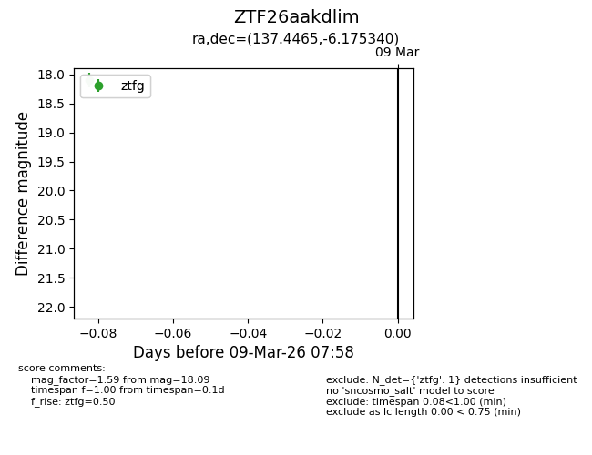
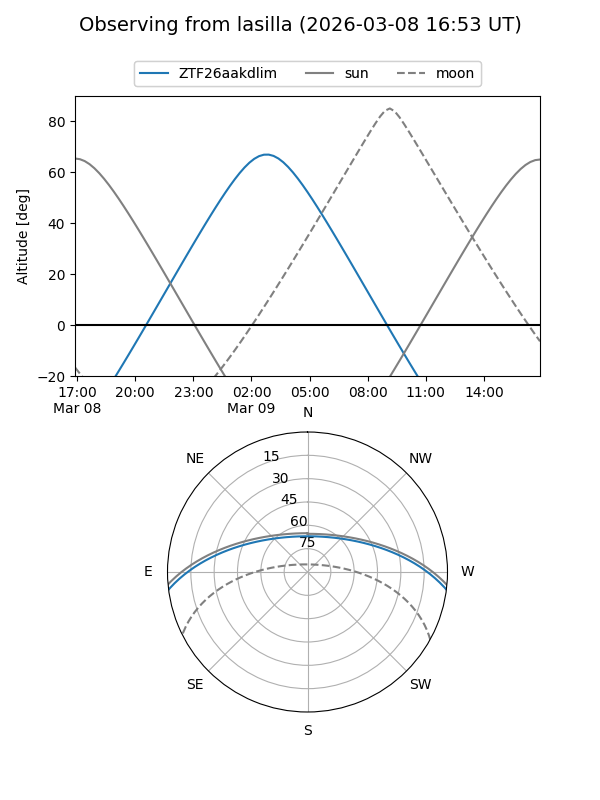
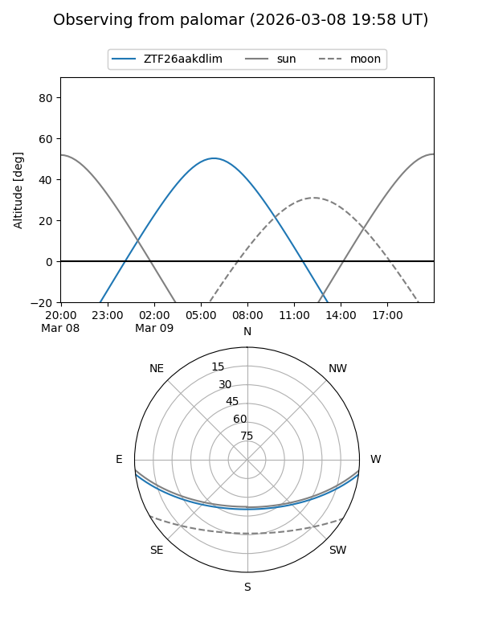

ZTF26aakdlim
Target ZTF26aakdlim at 2026-03-09 07:59
Aliases and brokers:
FINK: link
Lasair: link
ALeRCE: link
alt names
ZTF26aakdlim (ztf,fink_ztf)
Coordinates:
equatorial (ra, dec) = 137.4465,-6.17534
equatorial (HMS+DMS) = 09:09:47.16,-06:10:31.22
galactic (l, b) = (236.2662,+26.95083)
Flags:
Photometry:
last ztfg=18.09
1 ztfg detections
Lightcurve

Visibility


Additional plots